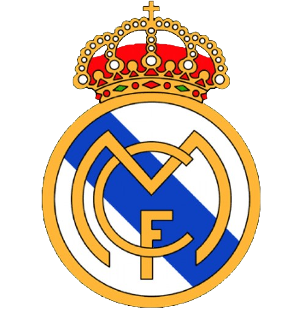

- Real Madrid 
- Manchester United
- Liverpool
- Barcelona


Todos estos se encuentran entre los clubes más grandes del fútbol mundial Las selecciones europeas y sudamericanas tienen un gran número de seguidores, La inversión moderna ha hecho crecer a clubes como el Manchester City y el PSG.